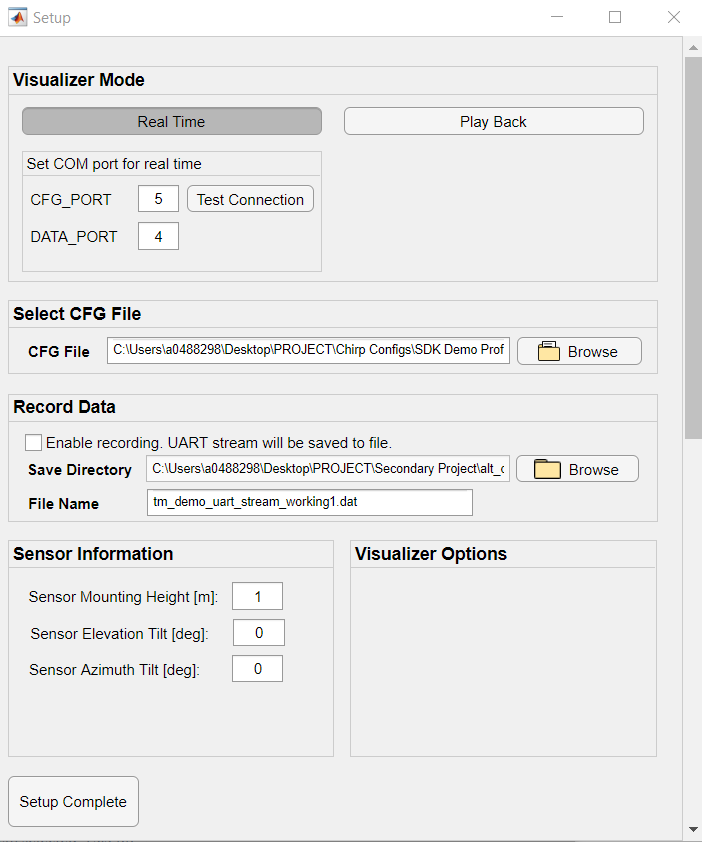
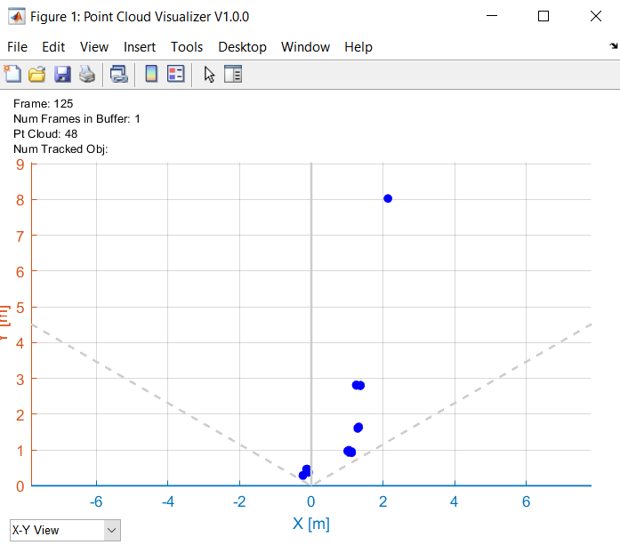
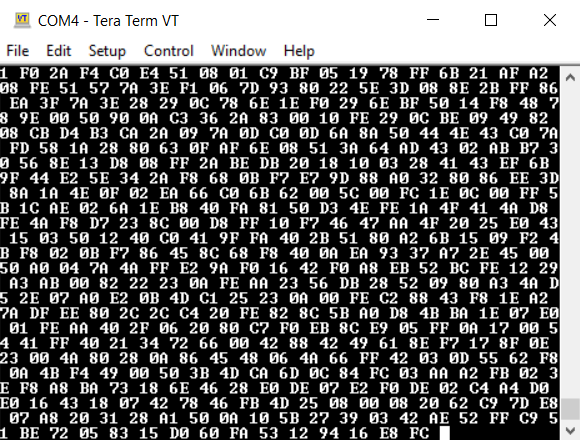
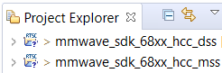
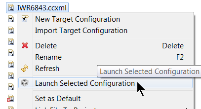
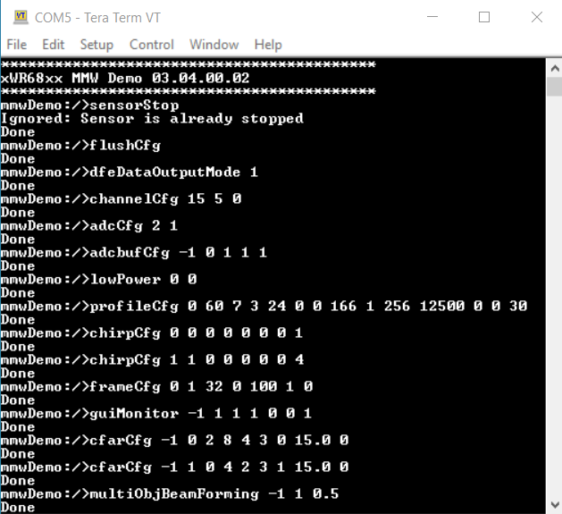
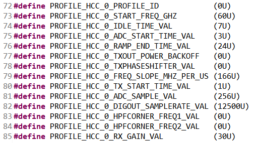
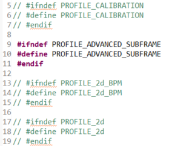
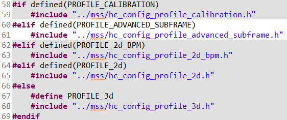
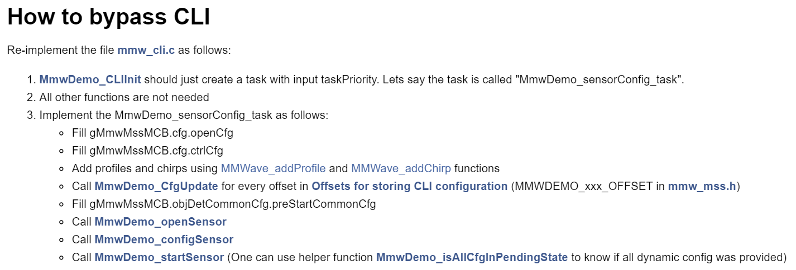

Overview of mmWave SDK Out of Box Demo - 68xx Hard-Coded Config Version
===========
This is the mmWave SDK out-of-box (OOB) demo lab with hard-coded chirp configurations for the IWR68xx EVM.
This specific OOB demo serves as an extension of the [initial OOB demo](https://dev.ti.com/tirex/explore/node?node=AM1kRI3l5vvDUDVn-RHrxQ__VLyFKFf__LATEST) that utilized the [mmWave Demo Visualizer](https://dev.ti.com/gallery/view/mmwave/mmWave_Demo_Visualizer/ver/3.5.0/").
This lab implements the CLI bypass method as descibed in the IWR68xx SDK Doxygen.
This lab will allow users to flash hard-coded chirp configurations into the image binary of the EVM and permit the sensor to output data without needing the mmWave Demo Visualizer.
This will allow users to more easily utilize the IWR68xx EVM with their own custom visualizer for use with custom applications.
{{y
Users with an IWR6843ISK are recommended to run the other appropriate out-of-box demo with the mmWave Demo Visualizer before using this lab so that they can gain familiarity with the sensor's capabilities and adequately visualize the sensor data.
}}
# Requirements
### Required and Supported mmWave Evaluation Modules (EVM)
Quantity | Item | Details
---------|------------------------------------|-----------------
1 | IWR6843ISK Antenna Module Board | [IWR6843ISK ES2.0 Antenna Module](http://www.ti.com/tool/IWR6843ISK)
1 | MMWAVEICBOOST Carrier Board | OPTIONAL: [MMWAVEICBOOST Carrier Board](http://www.ti.com/tool/MMWAVEICBOOST) for CCS based development and debugging
| | Note: The rest of this document will refer to the above board combination as <b>EVM</b> .
### Additional Hardware Requirements
Quantity | Item | Details
---------|--------------------------|-----------------
1 | Computer | Windows 7 or 10 PC with Google Chrome Browser and TI Cloud Agent Extension installed.
1 | Micro USB Cable | Provided with the [Industrial Radar Carrier Board](http://www.ti.com/tool/MMWAVEICBOOST)
1 | Power Supply | 5V, 3A with 2.1-mm barrel jack (center positive). The power supply can be wall adapter style or a battery pack with a USB to barrel jack cable.
[[r! IWR6843 ES2.0 Only
This lab is only compatible with ES2.0 version of IWR6843. Check the device version on your IWR6843ISK using the on-chip device markings as shown below>
1. If line 4 reads `678A`, you have an ES2 device. In this case, this lab is compatible with your EVM.
2. If line 4 reads `60 GHZi`, you have an older ES1 device. In this case, the lab is NOT compatible with your EVM. ES2 IWR6843ISK boards are orderable from the EVM link above.
<img src="images/iwr6843_silicon_revision.png" width="475"/>
]]
### Software
Tool | Version | Download Link
----------------------------|---------------------------|--------
TI mmWave SDK | 3.5.0.x | [Link to Latest mmWave SDK](http://software-dl.ti.com/ra-processors/esd/MMWAVE-SDK/latest/index_FDS.html) To access a previous version of the mmWave SDK scroll to the bottom of the table and click the link under "MMWAVE-SDK previous release". Repeat to continue stepping back to previous versions.
mmWave Industrial Toolbox | Latest | Download and install the toolbox. Go to [Using TI Resource Explorer & the mmWave Industrial Toolbox](../../../../docs/readme.html) for instructions.
Uniflash | Latest | Uniflash tool is used for flashing TI mmWave Radar devices. [Download offline tool](http://www.ti.com/tool/UNIFLASH) or use the [Cloud version](https://dev.ti.com/uniflash/#!/)
MATLAB Runtime | 2019a (9.6) | Exact version required. https://www.mathworks.com/products/compiler/matlab-runtime.html
Terminal Emulator | Latest | [TeraTerm](https://ttssh2.osdn.jp/index.html.en) or another terminal emulation software to ensure proper data streaming upon device bootup. The instructions provided in this user guide are based on [TeraTerm](https://ttssh2.osdn.jp/index.html.en)
Quickstart
===========
The quickstart guide will cover setting up the EVM, flashing firmware, and running the demo.
By the end, users should be able to visualize detected object data using the sensor and be able to begin evaluating different configurations and plot capabilities.
## 1. Setup the EVM for Flashing Mode
* For IWR6843ISK in Standalone/Modular Mode: Follow the instructions for [Hardware Setup of IWR6843ISK/ODS for Flashing Mode](../../../common/docs/hardware_setup/hw_setup_isk_ods_modular_mode_flashing.html)
* For MMWAVEICBOOST + Antenna Module setup: Follow the instructions for [Hardware Setup for Flashing in MMWAVEICBOOST Mode](../../../common/docs/hardware_setup/hw_setup_mmwaveicboost_mode_flashing.html)
## 2. Flash the EVM using Uniflash
Flash the binary listed below using UniFlash. Follow the instructions for [using UniFlash](../../../common/docs/software_setup/using_uniflash_with_mmwave.html)
BIN Name | Location
--------------------------|------------
xwr68xx_mmw_demo_hcc.bin | `<INDUSTRIAL_TOOLBOX_INSTALL_DIR>\mmwave_industrial_toolbox_<VER>\out_of_box_demo\`<br>`68xx_mmwave_sdk_hcc\prebuilt_binaries\xwr68xx_mmw_demo_hcc.bin`
## 3. Setup the EVM for Functional Mode
* For IWR6843ISK in Standalone/Modular Mode: Follow the instructions for [Hardware Setup of IWR6843ISK/ODS for Functional Mode](../../../common/docs/hardware_setup/hw_setup_isk_ods_modular_mode_functional.html)
* For MMWAVEICBOOST + Antenna Module setup: Follow the instructions for [Hardware Setup of MMWAVEICBOOST + Antenna Module for Functional Mode](../../../common/docs/hardware_setup/hw_setup_mmwaveicboost_mode_functional.html)
At this point, the EVM should be powered, connected to the PC, flashed with the demo, and put in functional mode. The hardware setup is now complete.
## 4. Run the Lab
The following steps will walk through running the lab. This lab contains two portions: data plot output using a provided MATLAB visualizer and data stream output through a connected terminal program.
### A. Custom MATLAB Visualizer
This involves setting up the GUI to communicate with the EVM and then visualizing the resulting output with the provided MATLAB GUI.
#### 1. Launch the Visualizer
[[y! MATLAB Runtime Version R2019a (9.6)
**Exact version** R2019a (9.6) required. Download from: https://www.mathworks.com/products/compiler/matlab-runtime.html Other labs in the mmWave Industrial Toolbox may use version R2017a (9.2). For this lab, version R2019a (9.6) MUST also be installed.]]
* Navigate to `<INDUSTRIAL_TOOLBOX_INSTALL_DIR>\mmwave_industrial_toolbox_<VER>\labs\out_of_box_demo\68xx_mmwave_sdk_hcc\gui`
* Double click to launch tm_visualizer.m
* A MATLAB environment will appear. Select Run and a setup window will appear as shown below.

#### 2. Configure the Visualizer
**Configure Visualizer Mode**
* **Real Time Mode**: This mode is used for viewing plots and graphs received by the sensor in real time.
* **Play Back Mode**: This mode is mainly used for debugging purposes and is for viewing previously recorded sensor data.
**Specify COM ports**
* Enter the COM ports associated with the mmWave EVM.
* Optional: Use **Test Connection** to ensure that COM ports are available and that a test command can be sent and received. If it fails, check the COM port numbers and ensure that you do not have any other applications such as Uniflash or another visualizer open that may be occupying the ports.
**Select CFG File**
* This is not a necessary component of the lab because the chirp configuration is already loaded onto the device.
**Enable Data Recording**
* This visualizer offers the ability to record UART stream data and save it to a file. After the visualizer session has ended and the visualizer window is closed, a data file will appear in the specified window and may be viewed later for debugging purposes.
**Setup Complete**
* Click the **Setup Complete** button to confirm all the settings.
* The setup window will close and the main visualizer will open next.
* The visualizer will display UART stream data from the EVM sensor, indicating that the sensor was setup correctly.

### B. Tera Term Data Stream
This involves connecting the EVM's Data COM port to a Tera Term Instance to receive the EVM's data stream.
#### 1. Launch the UART Terminal
* Open one TeraTerm Instance and connect it to the COM port corresponding to the Data UART from the Flash the EVM section as described below:
* DATA UART = XDS110 Class Auxiliary Data Port
* **TeraTerm (Data UART):** Go to **Setup → Serial Port** dialog and enter the COM Port number for the Data UART Port and select the speed and other settings as shown below and press OK.
<img src="images/teraterm_data_port_config.png" width="300"/>
#### 2. Observe the Sensor's Data Stream
{{y
Initially, the data stream will appear as a long series of characters. To view a more coherent data stream, enable [debug mode](https://ttssh2.osdn.jp/manual/4/en/setup/teraterm-term.html) within the TERATERM.ini configuration file and change the output to hex mode. Once debug mode is configured properly, pressing Shift+Esc will enable debug mode and adjust the output to a readable format. Refer to the [Tera Term setup webpage](https://ttssh2.osdn.jp/manual/4/en/setup/teraterm.html) for more information
}}
* Power cycle the EVM by pressing the NRST button. The EVM will immediately begin outputting UART stream data to the terminal instance in a hexadecimal format. This indicates that the sensor was successfully configured. Refer to the [OOB Output Guide](understanding_oob_uart_data.html) to understand how to interpret the output data values.

This concludes the Quick Start Section
-----------
Developer's Guide
===========
* [Understand chirp config file](#understand-chirp-config-file)
* [Build the firmware from source code](#build-the-firmware-from-source-code)
* [Create custom hard-coded chirp configs](#create-custom-hard-coded-chirp-configs)
* [Implementing CLI bypass in other labs](#implementing-cli-bypass-in-other-labs)
Understand Chirp Config File
-----------
With this specific out-of-box demo, users can configure their own chirp profiles and load these configurations into the image binary for the EVM sensor.
Through this method, it is not necessary to send a "sensorStart" message from the mmWave Demo Visualizer, as was needed in the other OOB demo.
Instead, the EVM will automatically start streaming sensor data upon booting.
This allows users to more easily integrate the IWR68xx into their own custom visualizers for use with custom applications.
There are five provided header files which are derived from the demo profiles located within the SDK.
* hc_config_profile_2d.h
* hc_config_profile_2d_bpm.h
* hc_config_profile_3d.h
* hc_config_profile_advanced_subframe.h
* hc_config_profile_calibration.h
These demo profile CFGs can be located at `C:\ti\mmwave_sdk_<ver>\packages\ti\demo\xwr68xx\mmw\profiles`.
The commands and parameters contained in the header files are detailed in: "Section 3. 4. Configuration (.cfg) File Format" of the [mmWave SDK user's guide](http://software-dl.ti.com/ra-processors/esd/MMWAVE-SDK/latest/exports/mmwave_sdk_user_guide.pdf).
It is recommended to gain a thorough understanding of chirp profiles before editing the hard-coded configs.
-----------
Build the Firmware from Source Code
-----------
### 1. Software Requirements
Tool | Version | Download Link
----------------------------|---------------------------|--------------
TI mmWave SDK | 3.5.0.x | [Link to Latest mmWave SDK](http://software-dl.ti.com/ra-processors/esd/MMWAVE-SDK/latest/index_FDS.html) To access a previous version of the mmWave SDK scroll to the bottom of the table and click the link under "MMWAVE-SDK previous release". Repeat to continue stepping back to previous versions.
mmWave Industrial Toolbox | Latest | Download and install the toolbox. Go to [Using TI Resource Explorer & the mmWave Industrial Toolbox](../../../../docs/readme.html) for instructions.
Uniflash | Latest | Uniflash tool is used for flashing TI mmWave Radar devices. [Download offline tool](http://www.ti.com/tool/UNIFLASH) or use the [Cloud version](https://dev.ti.com/uniflash/#!/)
Code Composer Studio | 8.3.1 | [Code Composer Studio v8](http://processors.wiki.ti.com/index.php/Download_CCS#Code_Composer_Studio_Version_8_Downloads)
MATLAB Runtime | 2019a (9.6) | Exact version required. https://www.mathworks.com/products/compiler/matlab-runtime.html
Terminal Emulator | Latest | [TeraTerm](https://ttssh2.osdn.jp/index.html.en) or another terminal emulation software to ensure proper data streaming upon device bootup. The instructions provided in this user guide are based on [TeraTerm](https://ttssh2.osdn.jp/index.html.en)
### 2. Import Lab Project
The mmWave SDK Out-of-box demo Lab CCS Project is available under on TI Resource Explorer under mmWave Sensors → mmWave Industrial Toolbox. You can import the project in your CCS workspace using TI Resource Explorer in CCS or using a browser. Both methods of importing projects are defined in the Expand boxes below.
[[b! Project Workspace
When importing projects to a workspace, a copy is created in the workspace. It is important to note that the copy in user's workspace is the one that gets built and all modifications will only be implemented for the workspace copy. The original project downloaded in mmWave Industrial Toolbox is not modified.
]]
* Start CCS and setup workspace as desired.
* Import the project below to CCS using either TI Resource Explorer in CCS or CCS Import Projectspecs method:
* **mmwave_sdk_68xx_hcc_dss**
* **mmwave_sdk_68xx_hcc_mss**
[[+d Expand for details on importing via TI Resource Explorer in CCS
* In the top toolbar, navigate to **View → Resource Explorer**
* In the **Resource Explorer** side panel (not the main panel with "Welcome to.."), navigate to **Software → mmWave Sensors → Industrial Toolbox - <ver> → Labs → mmWave SDK Demo - 68xx HCC Version**
* Under the expanded **mmWave SDK Demo - 68xx HCC Version** folder, there should be a CCS project named **mmwave_sdk_68xx_hcc**.
* Click on the project, which should open the project in the right main panel, and then click on the Import to IDE button <img src="images/import_ide_icon.png" width="40"/>.
+]]
[[+d Expand for details on importing via CCS Import Projectspecs
* In the top toolbar, navigate to **Project → Import CCS Projects...**
* With the **Select search-directory** option enabled, click **Browse...**, navigate to the **68xx_mmwave_sdk_hcc** folder at `C:\ti\<mmwave_industrial_toolbox_install_dir>\labs\out_of_box_demo\68xx_mmwave_sdk_hcc`, and then click **OK**.
* Under **Discovered projects**, select **mmwave_sdk_68xx_hcc** then click **Finish**.
+]]
[[g! Successful Import to IDE
After using either method, the mmwave_sdk_68xx_mss project should be visible in **CCS Project Explorer**

]]
[[r! Error during Import to IDE
If an error occurs, check that the software dependencies listed above have been installed. Errors will occur if necessary files are not installed in the correct location for importing.
]]
### 3. Build the Lab
#### **Build DSS Project**
The DSS project must be built before the MSS project.
With the **mmwave_sdk_68xx_hcc_dss** project selected in **Project Explorer**, right click on the project and select **Rebuild Project**. Selecting **Rebuild** instead of **Build** ensures that the project is always re-compiled. This is especially important in case the previous build failed with errors.
[[g! Successful DSS Project Build
In the **Project Explorer** panel, navigate to and expand **mmwave_sdk_68xx_hcc_dss > Debug** directory. The project has been successfully built if the following files appear in the **Debug** folder:
* mmwave_sdk_68xx_hcc_dss.bin
* mmwave_sdk_68xx_hcc_dss.xe674
]]
#### **Build MSS Project**
After the DSS project is successfully built, select **mmwave_sdk_68xx_hcc_mss** in **Project Explorer**, right click on the project and select **Rebuild Project**.
[[g! Successful MSS Project Build
In the **Project Explorer** panel, navigate to and expand **mmwave_sdk_68xx_hcc_mss > Debug** directory. The project has been successfully built if the following files appear in the **Debug** folder:
* xwr68xx_mmw_hcc_mss.xer4f
* xwr68xx_mmw_hcc_demo.bin
]]
[[r! Build Fails with Errors
If the build fails with errors, please ensure that all the [prerequisites](#software) are installed as mentioned in the mmWave SDK release notes.
]]
[[b! Note
As mentioned in the [Quickstart](#quickstart) section, pre-built binary files, both debug and deployment binaries are provided in the pre-compiled directory of the lab.
]]
### 4. Execute the Compiled Lab
There are two ways to execute the compiled code on the EVM:
* **Deployment mode**: In this mode, the EVM boots autonomously from flash and starts running the bin image
* Using Uniflash, flash the **xwr68xx_mmw_demo_hcc.bin** found at `<PROJECT_WORKSPACE_DIR>\mmwave_sdk_68xx_hcc_mss\Debug\xwr68xx_mmw_demo_hcc.bin`
* The procedure to flash the EVM is the same as detailed in the [Flash the EVM](#quickstart) section.
* **Debug mode**: This mode is is used for downloading and running the executable (.xer4f) from CCS. This mode enables JTAG connection with CCS while lab is running; useful during development and debugging
[[+d Expand for help with Debug mode:
The CCS debug firmware (provided with the mmWave SDK) needs to be flashed once on the EVM.
* CCS Debug method is enabled by flashing the CCS Debug Firmware (provided with the mmWave SDK) using the methods covered in the Quickstart [Flash the EVM](#quickstart) section.
* Use the following image instead
Image | Location | Comment
----------------|--------------|------------------------
Meta Image 1 | `C:\ti\mmwave_sdk_<ver>\packages\ti\utils\ccsdebug\xwr68xx_ccsdebug.bin` | Provided with the mmWave SDK
After the CCS debug firmware has been flashed, connect the EVM to CCS
* Create a target configuration (skip to "Open the target..." if config already created previously in another lab for xwr68xx)
* Go to **File > New > New Target Configuration File**
* Specify an appropriate file name (ex: IWR68xx.ccxml) and check "**Use shared location**". Click **Finish**.
* In the configuration editor window:
* Select **Texas Instruments XDS110 USB Debug Probe** for Connection
* Select **IWR6843** device as appropriate in the Board or Device text box.
* Press the **Save** button to save the target configuration.
* [Optional]: Press the **Test Connection** button to check the connection with the board.
* Open the target configuration window by going to **View > Target Configurations**.
* Under **User Defined** configurations the target configuration previously created should appear.
* Right click on the target configuration and select **Launch Select Configuration**. The target configuration will launch in the **Debug Window**.

* Connect to Cores
* Select the **Texas Instruments XDS110 USB Debug probe/C674X_0**, then right click and select **Connect Target**
* Select the **Texas Instruments XDS110 USB Debug probe/Cortex_R4_0** and then right click and select **Connect Target**
* Load the binary
* Once both targets are connected, click on the C674X_0 target and then click **Load** button in the toolbar. <img src="images/load_program_icon.png" width="40"/>
<img src="images/load_program.png" width="500"/>
* In the **Load Program** dialog, press the **Browse Project** button .
* Select **mmwave_sdk_68xx_hcc_dss.xe674** found at `<PROJECT_WORKSPACE_DIR>\mmwave_sdk_68xx_hcc_dss\Debug\mmwave_sdk_68xx_hcc_dss.xe674` and press **Ok**.
* Press **Ok** again in the **Load Program** dialog.
* Repeat the above Load the Binary process for the Cortex_R4_0 target, selecting instead **xwr68xx_mmw_hcc_mss.xer4f** found at `<PROJECT_WORKSPACE_DIR>\mmwave_sdk_68xx_hcc_mss\Debug\xwr68xx_mmw_hcc_mss.xer4f`
<img src="images/load_program2.png" width="500"/>
* Run the binary
* Select **Texas Instruments XDS110 USB Debug probe/Cortex_R4_0**, press the **Run/Resume** button <img src="images/run_resume_icon.png" width="30"/>
* Repeat above step for the **Texas Instruments XDS110 USB Debug probe/C674X_0**
* The program should start executing and generate console output as shown.
<img src="images/ccsdebug_console.png" width="400"/>
[[g! Successful Run Binary
If binary is running correctly, the Console will include the “CLI is operational” message which indicates that the program is ready and waiting for the sensor configuration.
]]
+]]
### 5. Output from mmWave Demo Visualizer<br> and Output using DCA1000EVM
The mmWave Demo Visualizer is used to visualize processed output data from the mmWave radar device. This processed output data can be saved in binary form to a .DAT file. Additionally, raw ADC data can be saved for offline processing using the [DCA1000 EVM](https://www.ti.com/tool/DCA1000EVM).
To learn more about the structure of this output data please refer to the following resources:
[[b! Output Data versus Raw ADC Data
Output data refers to point cloud data (x,y,z,v). Raw ADC data refers to digitally sampled sensor data.
]]
* Output Data Structure Information:
* `<MMWAVE_SDK_INTSALL_DIR>\packages\ti\demo\xwr68xx\mmw\docs\doxygen\html\index.html`
* How to use the [DCA100EVM](https://www.ti.com/tool/DCA1000EVM) for raw data capture:
* `<MMWAVE_SDK_INTSALL_DIR>\docs\mmwave_sdk_user_guide.pdf` <br>Section 3.3.2 mmWave Demo with LVDS-Based Instrumentation
* Parsing Script Information for mmWave Demo Visualizer
* `<MMWAVE_SDK_INTSALL_DIR>\docs\mmwave_sdk_user_guide.pdf` <br>Section 3.3.1 mmWave Demo - Advanced GUI Options
* Parsing Script Location for mmWave Demo Visualizer and [DCA100EVM](https://www.ti.com/tool/DCA1000EVM) for raw data capture:
* `<MMWAVE_SDK_INTSALL_DIR>\packages\ti\demo\parser_scripts`
After running the lab using either method, the demo firmware should be executing on the EVM and waiting for sensor configuration.
Now, the output of the EVM can be routed to a custom visualizer for a user-created application.
-----------
Create Custom Hard-Coded Chirp Configs
-----------
### 1. Test Custom Chirp Configuration
To program the hard-coded configuration into the mmWave sensor, it is important to ensure that the custom configuration is valid.
To test this, it is necessary to pass the chirp profile through the command line interface (CLI). This will help determine if there are any errors.
* Flash the EVM using Uniflash with the pre-built binary image listed below. This will give us useful debug information.
Refer to the [Uniflash guide](../../../common/docs/software_setup/using_uniflash_with_mmwave.html) for information on how to do this.
BIN Name | Location
--------------------------|------------
xwr68xx_mmw_demo.bin | `<INDUSTRIAL_TOOLBOX_INSTALL_DIR>\mmwave_industrial_toolbox_<VER>\out_of_box_demo\`<br>`68xx_mmwave_sdk_dsp\prebuilt_binaries\xwr68xx_mmw_demo.bin`
* Set up the EVM in functional mode by removing the SOP2 jumper and power cycling the device.
* Open 2 instances of a terminal emulator and connect them to the COM ports of the mmWave sensor.
[[+d Expand for details on connecting to EVM using Tera Term
* Open two TeraTerm Instances, one each for the two EVM COM ports based on the port numbers from the Flash the EVM section as described below:
* For MMWAVEICBOOST + IWR6843ISK
* USER UART = XDS110 Class Application/User UART
* DATA UART = XDS110 Class Auxiliary Data Port
* **TeraTerm #1 (User UART):** Go to **Setup → Serial Port** dialog and enter the COM Port number for the User UART Port and select the speed and other settings as shown below and press OK.
<img src="images/teraterm_control_port_config.png" width="300"/>
* **TeraTerm #2 (Data UART):** Go to **Setup → Serial Port** dialog and enter the COM Port number for the Data UART Port and select the speed and other settings as shown below and press OK.
<img src="images/teraterm_data_port_config.png" width="300"/>
* Press Enter on the Control (User) UART terminal. You should see the <b>mmWave:/></b> prompt which will allow you to send information about your chirp configuration to the EVM.
* Output response from the sensor will be displayed on the Data UART terminal.
+]]
* Enter each line of the chirp profile into the UART terminal, as shown below.

* Any errors within the custom chirp profile will be highlighted.
After all of the necessary elements are entered and the "sensorStart" command is entered, the Data terminal will begin streaming the information from the sensor.
This indicates a successful chirp config.
### 2. Edit Hard-Coded Chirp Config in CCS
Now that a valid custom chirp config has been verified, it is time to edit the hard-coded header files and flash the custom profile onto the EVM.
There are various files that need to be edited, and it is recommended to edit these files within the Code Composer workspace from earlier.
The files that need to be edited include one of the provided header files (e.g. hc_config_profile_2d.h) and hc_config_defs.h.
To ensure optimal lab performance and avoid errors, configuration edits should be made to the existing header files.
Of the available profiles, hc_config_profile_advanced_subframe is the most robust and finely tuned configuration.
The other profiles are simpler and thus easier to edit.
When editng a custom header file, follow the structure outlined in the other header files for reference.
The header files contain all of the chirp variables, which are named similarly to the elements listed within the [mmWave SDK](http://software-dl.ti.com/ra-processors/esd/MMWAVE-SDK/latest/exports/mmwave_sdk_user_guide.pdf).
Edit the values of these variables according to the custom chirp config to create the hard-coded chirp profile.

The hc_config_defs.h file contains less common chirp elements. Edits to these values should be made only as necessary.
This file further allows the user to choose which header profile will be used. By default, hc_config_profile_3d is chosen.
Remove the comments corresponding to the desired header profile that was edited in the previous step.
If the "inactive region colorization" setting is enabled, the chosen profile will be highlighted at the bottom of the file.


### 3. Building the Image Binary File
Once the hard-coded config has been completely programmed into the OOB demo, follow the steps above in the [Build the Firmware from Source Code](#build-the-firmware-from-source-code) section.
Rebuild the DSS and MSS projects, and a new binary image will be located at `<PROJECT_WORKSPACE_DIR>\mmwave_sdk_68xx_hcc_mss\Debug\xwr68xx_mmw_demo_hcc.bin`.
Flash the image binary onto the EVM using Uniflash. The mmWave IWR68xx device should now be able to stream data to a custom user application or custom visualizer.
-----------
Implementing CLI Bypass in Other Labs
-----------
Bypassing the CLI input is a useful implentation within any lab as it enables the user to load a hard-coded configuration into the EVM and allow the EVM to start sensing on bootup.
This lab was created by altering the source code within the original 68xx DSP out-of-box demo.
Code alterations were only made within the "mmw_cli.c" file of the master subsystem (MSS) and followed the structure outlined within the SDK doxygen.
To implement hard-coded configurations in a lab, follow the guidelines below.
Each lab has its own CLI file which handles the CLI input as well as configuring and starting the sensor.
The CLI inputs should be restructured to make reference to hard-coded chirp configuration values, either within a separate header file or directly within the source code.
Refer to the "mmw_cli.c" file within this lab for a detailed example of CLI bypassing.

-----------
Need More Help?
===========
* Additional resources in the documentation of the mmWave SDK:
* mmWave SDK Module Doc located at `<mmwave_sdk_install_dir>/docs/mmwave_sdk_module_documentation.html`
* mmWave SDK User's Guide located at `<mmwave_sdk_install_dir>/docs/mmwave_sdk_user_guide.pdf`
* mmWave SDK Release Notes located at `<mmwave_sdk_install_dir>/docs/mmwave_sdk_release_notes.pdf`
* Find answers to common questions on [mmWave E2E FAQ](https://e2e.ti.com/support/sensor/mmwave_sensors/w/wiki)
* Search for your issue or post a new question on the [mmWave E2E forum](https://e2e.ti.com/support/sensor/mmwave_sensors/f/1023)